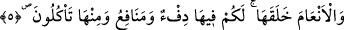

isbat etmeye kalkıştı. Varlık ve fiiller hususunda Allah Teâlâ’ya ortaklık iddiâsında
bulundu.”
Âyet, insanın gaflet ve nisyanının yaratılışıyla birlikte başladığına işâret ederek onu,
cehâleti, küfran-ı nîmet hususundaki ısrarı ve aşırı küstahlığı ile vasıflandırmaktadır.
Denilir ki: Allah önce insanın cevherini topraktan sonra da nutfeden yarattı. O ise
kibirlenmektedir. Halbuki, bütün âlimlerce necis kabûl edilen bir sudan yaratılmışken
kibirlenmek onun neyine.
Başlangıçta meni suyundan olmadın mı?
Eğer insan isen başından benliği defet.
Hikâye edilir ki gerçek tevhîd erbabından bazı riyâzat ehli muhakkıkların da
artıklarından misk kokusu alınırdı. Aslında kalplerinin temizliği ve hallerinin tesirleri
bütün uzuvlarına sirâyet ettiğinden bu onlar için imkânsız bir şey değildir. Onlar sûreten
nutfeden olsalar da mânen nurdandırlar. Elbette başkaları onlar gibi olamaz. Çünkü
gaflet ehlinden olan başkalarının aksine onların mânevî hakîkatleri vücud sûretinde
ortaya çıkmış, gaybetten uzaklaşıp şuhûd âlemine ulaşmışlardır. Sen de onların ulaştığı
dereceye ulaşmak ve sâhib oldukları şeyleri elde etmek istersen ihlasla amele sarıl,
münakaşayı ve faydasız çekişmeyi bırak. Çünkü tevhîdin hakîkatini inatçı hasım elde
edemez.
5. Hayvanları da O yarattı. Onlarda sizin için ısıtıcı (şeyler) ve birçok faydalar
vardır. Onlardan bir kısmını da yersiniz.
Ey Âdemoğulları! Deve, sığır, koyun ve keçi gibi “hayvanları da” sizin için, yâni
sizin faydalanmanız ve ihtiyaçlarınızı gidermeniz için “O yarattı.”
“__WORD__el-En‘âm”, “__WORD__ neam” kelimesinin çoğuludur. Deve, sığır, koyun ve keçi için
kullanılır. Bu dört cinse, erkekleri ve dişileri ayrı ayrı hesab edilerek “sekiz eş” denir.
At, eşek ve katır, “el-En‘âm” kelimesinin kapsamı dışındadır. Bu isim çoğunlukla deve
için kullanılır.
Aslında sâdece burada sayılan hayvanlar değil, bütün mahlûkat insan için
yaratılmıştır. “Yeryüzünde olan her şeyi sizin için yarattı.” (el-Bakara,
2/29).”Göklerde ve yerde ne varsa hepsini sizin emrinize verdi.” (Lokman, 31/20)
âyetleri de bunu ifâde etmektedir. İnsan ise “Seni de kendim için seçtim.” (Tâhâ,
20/41) âyetinde buyrulduğu üzere Allah Teâlâ için yaratılmıştır. Çünkü insan, Allah
Teâlâ’nın sıfatlarının yansıdığı bir ayna ve O’nun en güzel isimlerinin yansıma yeridir.
“Onlarda sizin için ısıtıcı (şeyler)” o hayvanların sıcak tutacak postları vardır. O
hayvanların elbiseleri ise soğuktan koruyan kıl ve yündür. “ve” yavrulayıp çoğalmaları,
sütleri, binek oluşları, kendileriyle çiftçilik yapılması, satıp paralarını almak ve kiraya